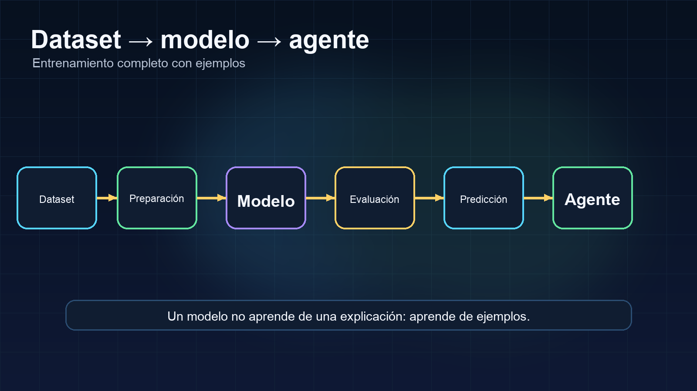
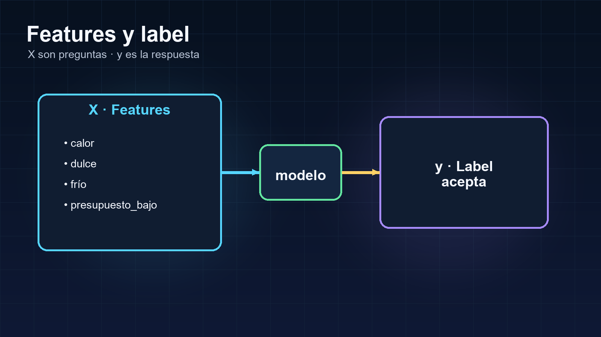
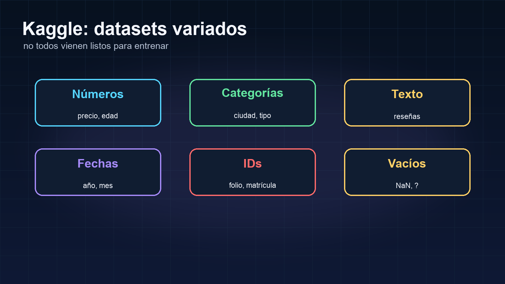
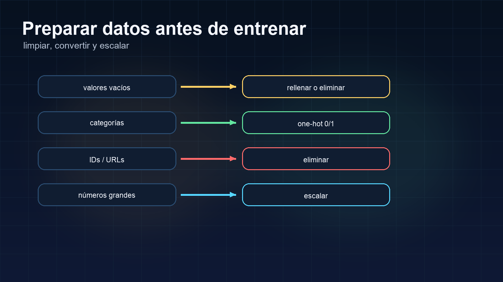
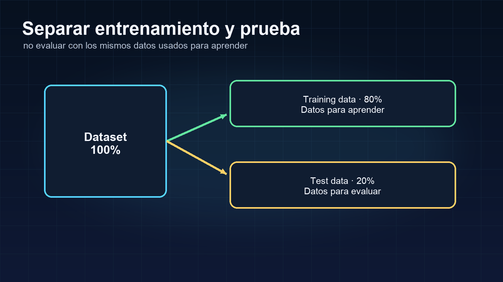
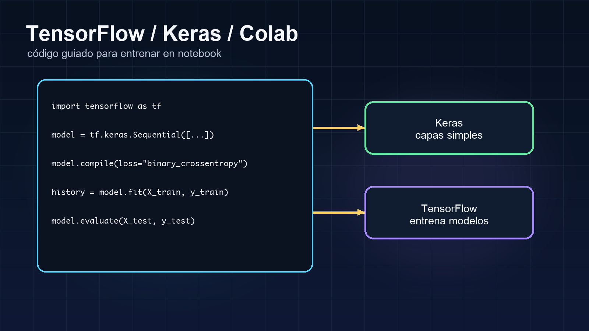
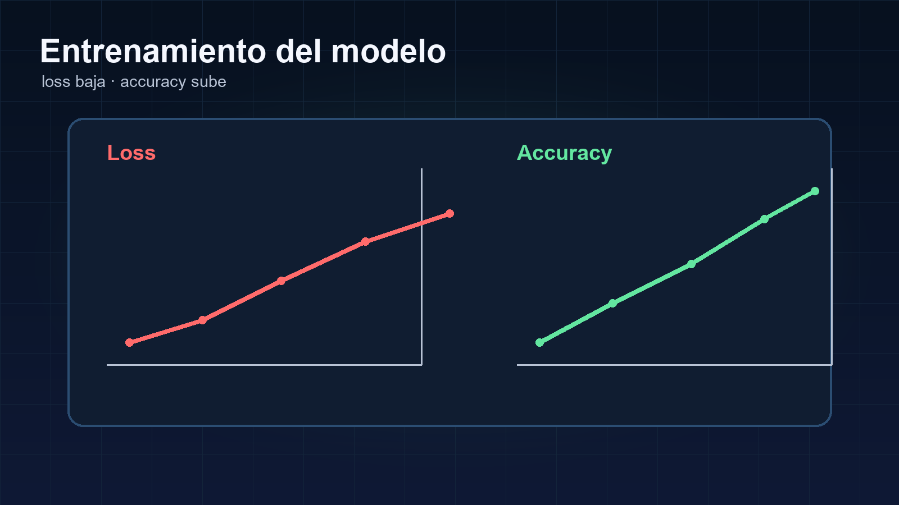
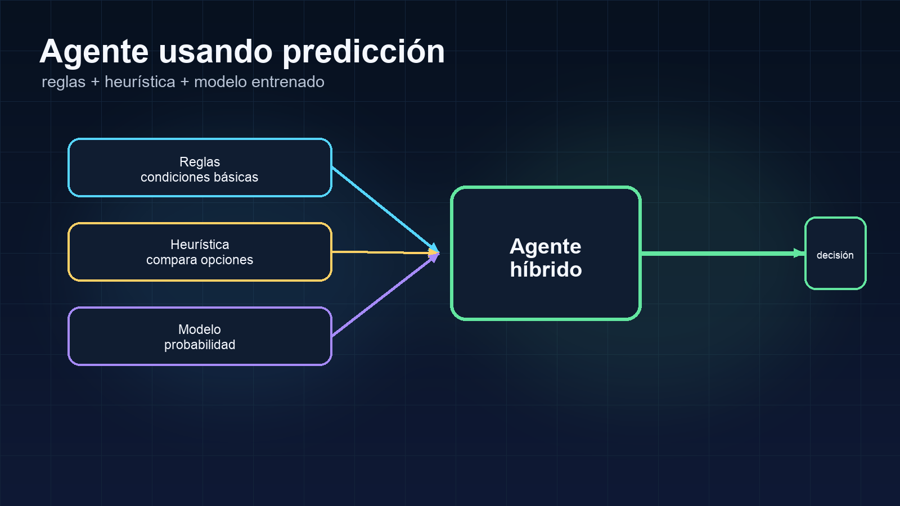
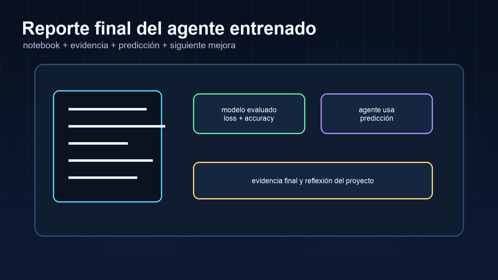

Entender el dataset
Revisar columnas, tipos de datos, valores vacíos y objetivo.
Resultado:sabes qué contiene tu CSV.Entrena un modelo con datos de Kaggle, evalúa su aprendizaje y úsalo dentro de tu agente de IA.
En la Clase 14 entendiste cómo una red neuronal ajusta pesos para reducir el error. Ahora llevarás esa idea a un entrenamiento completo: preparar un dataset, separar entradas y salida, entrenar un modelo, evaluar su aprendizaje y usarlo para hacer predicciones dentro de tu agente.

Un modelo no aprende de una explicación: aprende de ejemplos.
Revisar columnas, tipos de datos, valores vacíos y objetivo.
Resultado:sabes qué contiene tu CSV.Convertir categorías, limpiar, separar X/y y crear train/test.
Resultado:datos listos para entrenar.Entrenar con TensorFlow/Keras, revisar métricas y probar predicciones.
Resultado:modelo conectado a tu agente.Un ejemplo para entender entrada, peso, predicción, error y ajuste.
Varios ejemplos para entrenar un modelo real con TensorFlow/Keras.
Reglas + heurística + modelo entrenado con explicación.
Entrenar un modelo significa darle ejemplos para que aprenda una relación entre datos de entrada y una salida esperada.
Nosotros escribimos reglas: SI calor = sí Y busca frío = sí ENTONCES recomendar frappé.
Damos ejemplos: calor + dulce + frío → aceptó; calor + dulce + presupuesto bajo → rechazó.
Un dataset es una colección de registros. Cada registro describe un caso: una visita, un alumno, una compra o un intento de compra.
Una visita de un estudiante o una compra.
Edad, ciudad, precio, fecha o si compró.
Columnas que el modelo puede observar después de prepararlas.
La columna correcta que queremos que aprenda a predecir.
Un dataset no es solo una tabla. Cada columna tiene un papel. Algunas columnas serán entradas para el modelo y una columna será la respuesta que queremos predecir.
Antes de entrenar, debemos clasificar las columnas.No todas las columnas se usan igual: unas se limpian, otras se convierten, otras se eliminan y una se usa como salida esperada.
| edad | ciudad | precio | fecha | compró |
|---|---|---|---|---|
| 23 | CDMX | 349 | 2026-03 | 1 |
| 41 | Puebla | 120 | 2026-04 | 0 |
| 29 | León | ? | 2026-04 | 1 |
Qué significa: dato que ya está en número.
Qué hacer: puede usarse como entrada; a veces conviene escalarla.
X · entrada del modeloQué significa: dato en texto con opciones.
Qué hacer: convertir a columnas 0/1 con one-hot encoding.
X · entrada que debe convertirseQué significa: debería ser número, pero tiene un dato faltante.
Qué hacer: limpiar, rellenar o eliminar ese registro.
X · entrada que debe limpiarseQué significa: representa tiempo.
Qué hacer: convertir a mes, año o día si aporta al objetivo.
X opcional · requiere transformaciónQué significa: es la respuesta que queremos que el modelo aprenda.
Qué hacer: usarla como y, no como entrada X.
y · columna objetivo| Columna | Ejemplo | Tipo | ¿X o y? | Qué hacer |
|---|---|---|---|---|
| edad | 23 | Numérica | X | Usar o escalar. |
| ciudad | CDMX | Categórica | X | Convertir con one-hot encoding. |
| precio | ? | Numérica con vacío | X | Limpiar, rellenar o revisar el registro. |
| fecha | 2026-03 | Fecha | X opcional | Extraer mes, año o día. |
| compró | 1 | Label | y | Predecir. No usar como entrada. |
Label = la respuesta correcta que queremos que el modelo aprenda. En este ejemplo, compró = 1 significa que sí compró y compró = 0 significa que no compró.
Si metemos la respuesta dentro de X, el modelo estaría haciendo trampa.
X = columnas de entrada: edad, ciudad, precio, fecha. y = columna objetivo: compró.
Aprende a separar las columnas que el modelo observa de la columna que debe aprender a predecir.
Antes de entrenar una red neuronal, debemos decirle al modelo dos cosas: qué datos puede mirar y qué respuesta debe aprender a predecir.
A los datos que el modelo mira les llamamos features o X. A la respuesta que queremos predecir le llamamos label o y.
X son las preguntas. y es la respuesta.Las features son las columnas que el modelo usa como pistas para aprender un patrón. Son los datos de entrada.
Las features no son la respuesta; son las pistas que ayudan a encontrar la respuesta.
El label es la columna que contiene la respuesta correcta o salida esperada. Es lo que queremos que el modelo aprenda a predecir.
El label es la respuesta que el modelo usará para medir si se equivocó.
En machine learning se usa comúnmente X para la matriz o tabla de entradas y y para la columna de respuestas. No necesitas memorizarlo matemáticamente: X = lo que el modelo puede ver y y = lo que el modelo debe aprender.
X: calor, dulce, frío, presupuesto_bajo. y: acepta.

Datos que el modelo observa.
Busca patrones y ajusta pesos.
Respuesta correcta para aprender.
El modelo recibe X, genera una predicción y la compara contra y. Esa comparación produce el error que guía el entrenamiento.
| Caso | calor X | dulce X | frío X | hambre_alta X | presupuesto_bajo X | acepta y |
|---|---|---|---|---|---|---|
| Caso 1 | 1 | 1 | 1 | 0 | 0 | 1 |
| Caso 2 | 1 | 1 | 1 | 0 | 1 | 0 |
| Caso 3 | 0 | 1 | 0 | 1 | 0 | 0 |
| Caso 4 | 1 | 0 | 1 | 1 | 0 | 1 |
Dataset completo: calor, dulce, frío, hambre_alta, presupuesto_bajo, acepta.
X = calor, dulce, frío, hambre_alta, presupuesto_bajo. y = acepta.
El modelo recibe las entradas.
Genera una predicción.
Se mide error.
Corrige pesos para mejorar.
Cuando elegimos X/y, no solo necesitamos saber qué evitar. También necesitamos ver cómo se corrige. En cada ejemplo compara el lado incorrecto con el lado correcto.
Un buen entrenamiento empieza con una buena separación entre entradas y respuesta.X = calor, dulce, frío, acepta y = acepta
Por qué está mal: “acepta” es la respuesta. Si la incluimos dentro de X, el modelo ya está viendo lo que debe predecir.
X = calor, dulce, frío y = acepta
Por qué está bien: X contiene solo pistas del caso. y contiene la respuesta que el modelo debe aprender.
Frase clave: La respuesta nunca debe ir dentro de las entradas.
Escenario: quiero predecir si una persona compró.
y = ciudad
Por qué está mal: “ciudad” no responde si la persona compró o no compró. Solo indica ubicación.
X = edad, ciudad, precio, visitas_previas y = compró
Por qué está bien: “compró” sí representa la respuesta que quiero predecir.
Frase clave: La columna y debe responder directamente a la pregunta del proyecto.
X = customer_id, edad, precio y = compró
Por qué está mal: customer_id solo identifica el registro. Normalmente no explica por qué alguien compró.
X = edad, precio y = compró
Por qué está bien: X contiene datos que pueden tener relación con el resultado.
Nota: hay casos avanzados donde un ID podría conectarse con historial, pero para esta clase se elimina.
X = comentario_completo, precio y = compró
Ejemplo: “Me gustó mucho, pero el precio se me hizo alto...”
Por qué está mal: una red neuronal simple no entiende texto largo directamente si no lo procesamos.
X = longitud_comentario, precio y = compró
X = precio y = compró
Por qué está bien: convertimos el texto en una variable simple o lo dejamos fuera para no complicar el primer entrenamiento.
Frase clave: Si el texto no está procesado, primero simplifícalo o déjalo fuera.
X = 80 columnas del dataset y = compró
Por qué está mal: si usas todo desde el inicio, será difícil detectar errores, limpiar datos y entender qué está aprendiendo el modelo.
X = 4 a 8 columnas útiles y = compró
Por qué está bien: primero hacemos una versión mínima funcional. Después podemos agregar más columnas.
Frase clave: Primero entrena simple. Luego mejora.
X = edad, precio, ciudad y = compró
Problema: “precio” tiene valores como ?, vacío o NaN.
Por qué está mal: el modelo no puede aprender correctamente si hay valores faltantes sin resolver.
X = edad, precio_limpio, ciudad_convertida y = compró
Por qué está bien: antes de entrenar, limpiamos o rellenamos los valores vacíos.
Acciones válidas: eliminar filas con pocos vacíos; rellenar numéricos con mediana; rellenar categorías con “desconocido”; eliminar columnas con demasiados vacíos.
X = ciudad, género, precio y = compró
Donde: ciudad = “CDMX”, “Puebla”, “León”.
Por qué está mal: el modelo necesita números. No puede usar texto categórico directamente en una red neuronal simple.
X = ciudad_CDMX, ciudad_Puebla, ciudad_León, precio y = compró
Por qué está bien: convertimos categorías en columnas 0/1 con one-hot encoding.
Frase clave: Las categorías deben convertirse antes de entrenar.
En Kaggle, los datasets vienen con muchas columnas. Tu primer trabajo no es entrenar de inmediato, sino decidir cuál columna representa la respuesta, cuáles ayudan a predecirla, cuáles deben limpiarse y cuáles se eliminan.
Kaggle te da la tabla, pero tú defines el problema de aprendizaje.
Así se verá la separación en código:
target = "acepta" X = df.drop(columns=[target]) y = df[target]
target guarda el nombre de la columna que queremos predecir. X contiene todas las columnas excepto la respuesta. y contiene solo la respuesta.
Después todavía tendremos que limpiar X: eliminar IDs, convertir categorías, manejar valores vacíos y escalar números.
Si no defines bien qué entra y qué sale, el modelo no puede aprender correctamente.

Los datasets de Kaggle pueden tener columnas muy distintas. Para no perdernos, usaremos colores con significado. Cada color nos dice qué tipo de dato estamos viendo y qué acción debemos tomar antes de entrenar.
Columnas que ya son números.
Ejemplo: edad, precio, calificación.Qué hacer: usar directamente o escalar.Columnas con opciones o texto corto.
Ejemplo: ciudad, género, tipo_producto.Qué hacer: convertir con one-hot encoding.Columnas de tiempo.
Ejemplo: fecha_compra, mes, año.Qué hacer: extraer año, mes, día o eliminar si no aporta.Columnas con datos faltantes.
Ejemplo: precio = ?, edad vacía.Qué hacer: limpiar, rellenar o eliminar.Columnas que pueden causar problemas.
Ejemplo: texto largo, datos muy sucios, clases desbalanceadas.Qué hacer: simplificar, revisar o dejar fuera al inicio.Columna que queremos predecir.
Ejemplo: compró, aceptó, riesgo.Qué hacer: usar como y, nunca como X.Columnas que normalmente no ayudan.
Ejemplo: ID, folio, nombre, URL.Qué hacer: eliminar de X.Usar, convertir, limpiar, transformar o eliminar. No basta con cargar el CSV: hay que preparar cada columna para que el modelo aprenda sin trampas ni ruido.
| customer_id Eliminar | edad Numérica | ciudad Categórica | precio Valor vacío | fecha Fecha | comentario Revisar | compró Label |
|---|---|---|---|---|---|---|
| A001 | 23 | CDMX | 349 | 2026-03 | “muy bueno” | 1 |
| A002 | 41 | Puebla | 120 | 2026-04 | “caro” | 0 |
| A003 | 29 | León | ? | 2026-04 | “lo compraría” | 1 |
Tipo: eliminar.
Por qué: identifica el registro, pero no explica la compra.
Acción: eliminar de X.Tipo: numérica.
Por qué: ya es número.
Acción: usar o escalar.Tipo: categórica.
Por qué: es texto con opciones.
Acción: convertir a números con one-hot encoding.Tipo: valor vacío.
Por qué: tiene un dato faltante.
Acción: rellenar, limpiar o eliminar fila.Tipo: fecha.
Por qué: representa tiempo.
Acción: extraer mes/año si aporta.Tipo: revisar.
Por qué: es texto largo.
Acción: dejar fuera por ahora o simplificar.Tipo: label / objetivo.
Por qué: es la respuesta que queremos predecir.
Acción: usar como y, no meter en X.Advertencia: Si metemos compró dentro de X, el modelo estaría viendo la respuesta. Eso invalida el entrenamiento.

df.head(), df.info(), df.isna().sum().
target = "columna_que_quiero_predecir".
IDs, nombres, URLs, vacías o duplicadas.
Eliminar pocos, rellenar numéricos con mediana y categorías con “desconocido”.
pd.get_dummies(...) convierte categorías en columnas 0/1.
Evita que números grandes dominen a otros valores.
La red neuronal aprende mejor cuando los datos están limpios y en formato numérico.

No debemos evaluar el modelo con los mismos datos que usó para aprender. Training data sirve para aprender; test data sirve para revisar si aprendió con casos que no vio.

Biblioteca para construir y entrenar modelos.
Forma sencilla de crear redes neuronales dentro de TensorFlow.
Modelo organizado por capas.
Capa donde las entradas se conectan con neuronas.
Prepara el modelo.
Entrena con ejemplos.
Predice casos nuevos.
relu detecta señales; sigmoid genera probabilidad sí/no.
modelo = tf.keras.Sequential([ tf.keras.layers.Dense(16, activation="relu", input_shape=[X_train_scaled.shape[1]]), tf.keras.layers.Dense(8, activation="relu"), tf.keras.layers.Dense(1, activation="sigmoid") ])

Mide qué tanto se equivoca el modelo. Queremos que baje.
Mide qué porcentaje de aciertos tiene. Queremos que suba, pero no siempre cuenta toda la historia.
Después de entrenar, podemos darle al modelo un caso nuevo. Si CaféBot recibe calor = 1, dulce = 1, frio = 1 y presupuesto_bajo = 0, el modelo puede responder 0.82: 82% de probabilidad de salida positiva.
Una predicción no es verdad absoluta. Es una estimación basada en patrones aprendidos.
X son las preguntas. y es la respuesta.
Completa el laboratorio para generar código personalizado.
El modelo entrenado no reemplaza todo el agente. Se convierte en una parte del agente. El agente puede combinar reglas, heurística y una señal predictiva adicional.
Validan condiciones básicas.
Compara opciones.
Predice probabilidad, riesgo, aceptación o categoría.
La red neuronal no reemplaza tu agente. Le da una señal predictiva adicional.

Tu reporte aparecerá aquí.